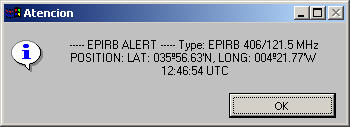
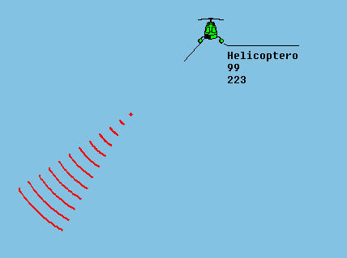

Balizas de Emergencia
En el sistema se simulan los siguientes tipos de balizas de emergencia:
- EPIRB 406/121.5 MHz. Se simula el modelo Tron 40s de Jotron.
- EPIRB INMARSAT-E 1.6 GHz. Se simula el modelo Global-3 de Navtec.
- SART (Search and Rescue Radar Transponder).

El operador puede activar una baliza de emergencia (EPIRB o SART) en cualquier momento picando sobre su icono. El sistema la situará en la misma posición en la que se encuentra la unidad en el momento de su activación.
En la presentación cartográfica, el icono de la unidad que activa una radiobaliza de emergencia se muestra en color rojo.
Cuando se activa una EPIRB Inmarsat, se envía un mensaje de socorro con el tipo de EPIRB, su posición y la hora en la que produce la alarma. Este mensaje es recibido por la estación costera Inmarsat más próxima a la EPIRB que tenga capacidad para recibir este tipo de alertas. El mensaje se presentará en el terminal Inmarsat C.
Cuando se activa una EPIRB o una SART se presenta un aviso al instructor indicando el tipo de baliza, la posición de la misma y la hora en la que produce la alarma.

El radiogoniómetro puede detectar la EPIRB 406/121.5 MHz en la frecuencia de 121.5 MHz.
La detección de balizas SART se simula añadiendo un canal adicional al radiogoniómetro específicamente dedicado a este tipo de balizas. La presentación de la detección se realiza en el radiogoniómetro de forma similar a la de una emisión de radiofrecuencia. Para la detección de balizas SART no se considera el sector de escucha del radiogoniómetro de forma que pueden detectarse balizas SART situadas fuera de dicho sector de escucha. Se detectarán todas las emisiones correspondientes a balizas SART situadas a menos de 6 Millas (configurable) de la posición del buque.
La detección de una baliza SART se presenta también en la Presentación Cartográfica. La presentación simula de una forma realista la imagen presentada en una pantalla radar por la detección de este tipo de dispositivo.

Para la visualización de las detecciones SART es útil seleccionar la opción Archivo – Modo SART de la barra de menú de la Pantalla de Control de Equipos. Al seleccionar esta opción la presentación cartográfica se centra en la posición de la unidad propia abarcando una escala de 12 millas.